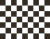
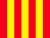

As bandeiras são um ícone dos desportos motorizados, na F1 as bandeiras desempenham a função crucial de transmitir informação rápida aos pilotos que estão a correr. Os avisos podem ser transmitidos via rádio, mas como estes podem ter não funcionar durante o Grande Prémio e normalmente estes avisos são críticos, opta-se por usar este sistema de bandeiras. Atualmente, as bandeiras da F1 são produzidas por uma empresa Americana chamada Pantone, mas ao contrário dos pneus utilizados na F1, o código de cores é responsabilidade da FIA.
| Bandeira | Cor | Significado |
|---|---|---|
| Branco | Entrada de carro lento na pista. Pilotos devem reduzir a velocidade. | |
| Azul | 9O carro mais lento deve dar passagem a um carro mais veloz que quer ultrapassar. O piloto que ignorar até três bandeiradas leva a penalização (Drive-trough ou Stop and Go). | |
| Amarelo | 1 Bandeira: Perigo adiante, detritos resultantes de acidente. Os pilotos devem reduzir a velocidade ao cruzar o local do acidente. 2 Bandeiras: Muito perigo adiante. Os pilotos devem preparar-se para uma eventual parada. 1 Bandeira e Placa de VSC: a Os pilotos terão de respeitar uma velocidade imposta pela FIA. Quem não respeitar, poderá ser penalizado. 1 Bandeira e Placa SC: Entrada do safety car. Os pilotos devem reduzir a velocidade | |
| Vermelho | A prova foi suspensa. Os carros que estiverem a percorrer o circuito devem reduzir e seguir até linha vermelha | |
| Verde | A pista está liberada e os pilotos podem retomar suas posições. | |
|  | Xadrez | Fim da etapa. Indica a vitória do primeiro a cruzar a linha. |
| Preto | Desclassificação. O piloto que a recebeu deve retornar à box. Vem acompanhada com o número do piloto | |
| Preta com Círculo Laranja | Indica que há um problema técnico com o carro. O piloto em questão (indicado na bandeira) deve ir à box. | |
| Metade Preto e Metade Branco na Diagonal | Indica que o piloto desempenhou atitude antidesportiva, à qual fica sob a ameaça de desclassificação.Vem acompanhada do número do piloto. | |
|  | Listrada em Amarelo e preto | Indica a presença de detritos ou óleo na pista. Os pilotos devem de reduzir a velocidade a partir do ponto sinalizado |